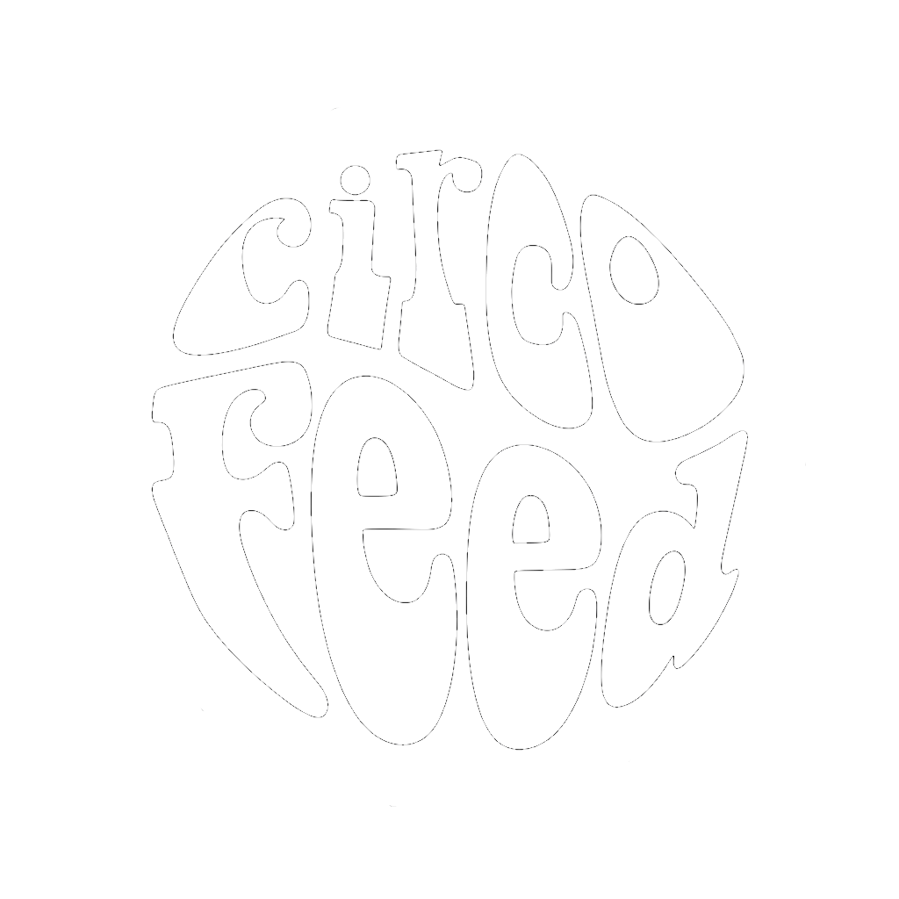

<!doctype html>
<html lang="es">
<head>
<meta charset="utf-8">
<meta name="viewport" content="width=device-width, initial-scale=1">
<meta name="color-scheme" content="dark">
<meta name="theme-color" content="#1c1c1c">
<meta name="apple-mobile-web-app-capable" content="yes">
<meta name="apple-mobile-web-app-status-bar-style" content="black">
<meta name="apple-mobile-web-app-title" content="CIRCO FEED">
<title>CIRCO FEED</title>
<link rel="icon" type="image/png" href="circofeed-favicon.png">
<link rel="apple-touch-icon" href="circofeed-logo-app.png">
<link rel="stylesheet" href="style.css">
</head>
<body>
<aside id="menu">
  <div class="menu-top">
    <a class="logo" href="#"></a>
    <button id="burger" aria-label="Abrir menú" aria-expanded="false">
      <svg viewBox="0 0 24 24" width="24" height="24"><path d="M4 7h16M4 12h16M4 17h16"/></svg>
    </button>
  </div>
  <div class="menu-body">
    <nav id="nav"></nav>
    <div class="toggles">
      <label class="toggle"><input type="checkbox" id="mark-read"><span></span>Marcar como leído</label>
      <label class="toggle"><input type="checkbox" id="hide-read"><span></span>Ocultar leídas</label>
      <p id="updated"></p>
    </div>
  </div>
</aside>
<main>
  <header id="view-head"></header>
  <div id="feed"></div>
  <footer id="errors"></footer>
</main>
<script src="data.js"></script>
<script src="app.js"></script>
</body>
</html>
